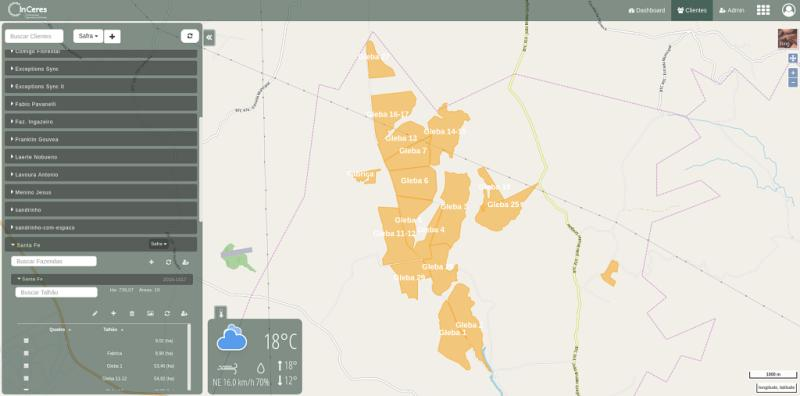

Inceres is a precision agriculture SaaS platform based in Brazil, offering advanced solutions for the agribusiness sector. They specialize in business intelligence, AI-driven decision-making, and efficient input application, aiming to reduce waste and optimize crop productivity. Inceres serves a wide range of clients, including farms, mills, and cooperatives, and has processed over 13 million hectares of land. Their services include soil sampling, fertility mapping, and satellite-based crop monitoring, providing valuable insights for sustainable and profitable agricultural practices.
At Inceres, my role as a Front-End Engineer involved spearheading innovative projects and leveraging cutting-edge technologies to enhance user experience in precision agriculture. I led the development of a dynamic map interface, a critical feature that allowed users to interactively draw polygons, create farms, and visualize soil samples with color differentiation. This interface was instrumental in simplifying complex data and making it more accessible and actionable for our users.
I also implemented a sophisticated color logic system, a unique feature that enabled the customization of the application's interface based on three variables. This development was a significant stride in enhancing user engagement and accessibility, demonstrating my commitment to creating user-centric and adaptable software solutions.
One of my most significant achievements at Inceres was initiating and leading the development of an intricate soil sample grid generation module. This feature was pivotal in the company's precision agriculture solutions, offering detailed and accurate soil analysis to aid in efficient farming practices. My work on this project showcased my ability to handle complex challenges and contribute meaningful innovations in the agriculture technology sector.
Throughout my tenure at Inceres, I extensively used technologies like React, Angular, Flask, Django, ElasticSearch, and OpenLayers. My experience in these technologies, combined with an agile SCRUM methodology, enabled me to deliver high-quality software solutions efficiently, contributing significantly to the company's growth and the advancement of precision agriculture technology.

- Categories: Website
SaaS - Period: 02/2016 - 03/2018
- Landing Page: inceres.com.br